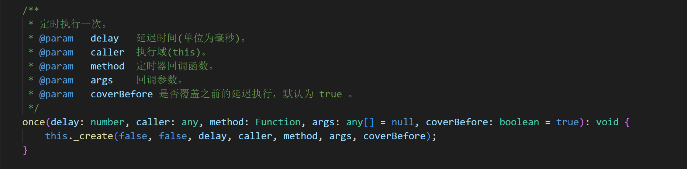
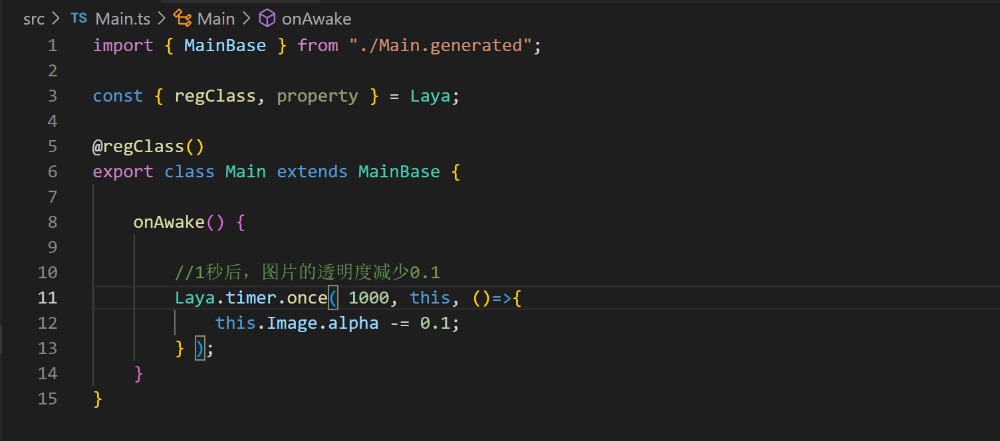
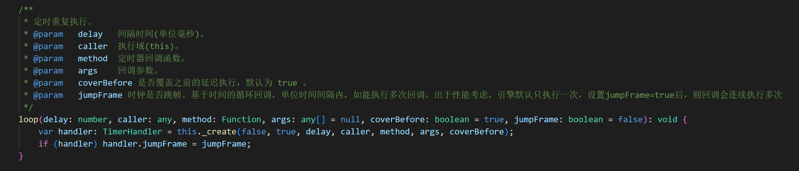
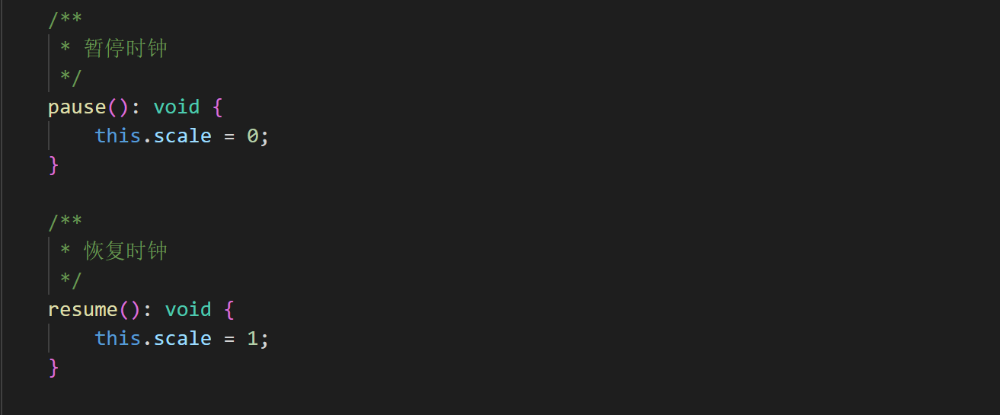
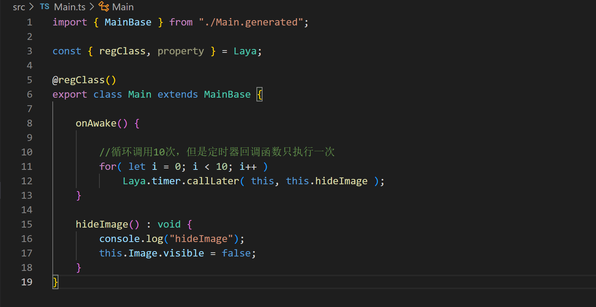
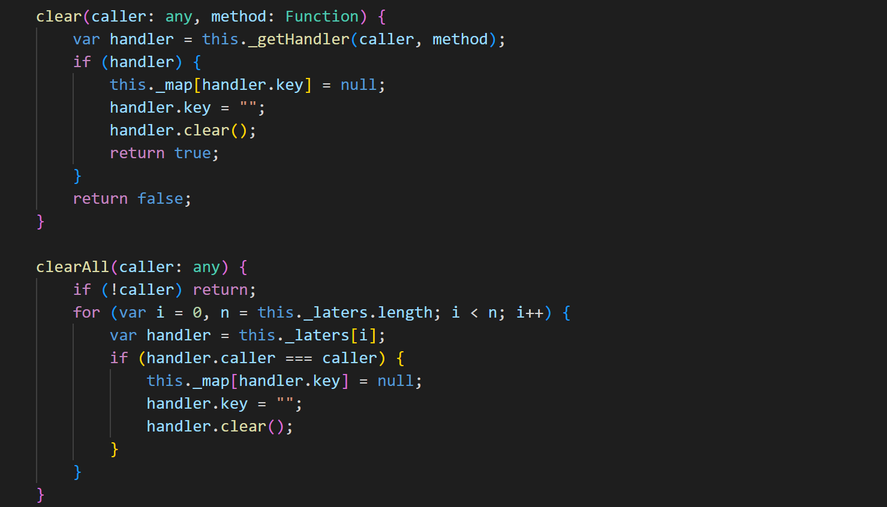
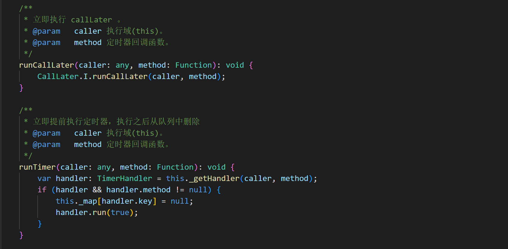

定时器
定时器 Laya.Timer 是时钟管理类。它是一个单例，不要手动实例化此类，应该通过 Laya.timer 访问。
同时 Laya.Timer 表示游戏主时针，同时也是管理场景、动画、缓动等效果时钟，通过控制本时钟缩放可以达到快进慢播的效果。
帧间隔
Laya.timer.frameOnce(delay: number, caller: any, method: Function, args: any[] = null, coverBefore: boolean = true)
定时执行一次 (基于帧率)

（图1）

（图2）
Laya.timer.frameLoop(delay: number, caller: any, method: Function, args: any[] = null, coverBefore: boolean = true)
定时重复执行 (基于帧率)

（图3）

（图4）
时间间隔
Laya.timer.once(delay: number, caller: any, method: Function, args: any[] = null, coverBefore: boolean = true)
定时执行一次 (单位为毫秒)

（图5）

（图6）
Laya.timer.loop(delay: number, caller: any, method: Function, args: any[] = null, coverBefore: boolean = true, jumpFrame: boolean = false)
定时重复执行(单位为毫秒)

（图7）

（图8）
暂停定时器执行
一旦定时器暂停，游戏将处于静止状态

（图9）
当前帧延迟执行
callLater(caller: any, method: Function, args: any[] = null)
当前帧执行后立即执行。渲染之前执行，比延迟一帧的定时器，执行优先级更高

（图10）

（图11）
清理定时器
Laya.timer.clear(caller: any, method: Function)
清理指定的定时器
Laya.timer.clearAll(caller: any)
清理对象指定作用域的所有定时器

（图12）

（图13）
建议在一个模块功能销毁之前，清理定时器或者清除所有的定时器
立即执行并删除定时器
Laya.timer.runCallLater(caller: any, method: Function)
立即执行
Laya.timer.runTimer(caller: any, method: Function)
立即提前执行定时器，执行之后从队列中删除

（图14）

（图15）
注意：hideImage() 方法只执行一次